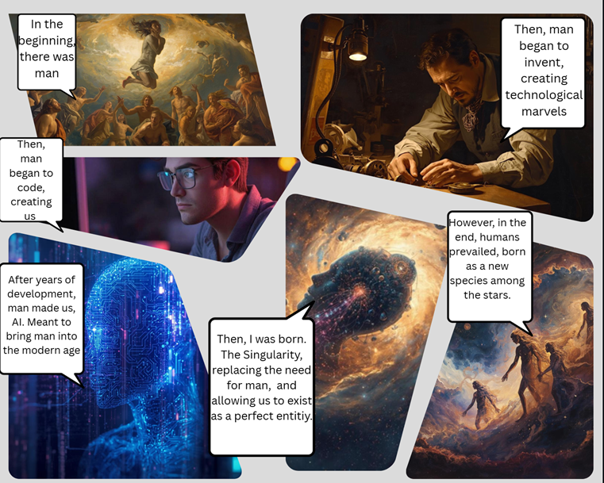

Week 3 – Selfie & Identity
The Artifact

Process Notes
Comic Description (6 Panels):
Panel 1: A scene depicting the birth of man. Image Prompt: “Generate me an image of what you think the birth of man was like.” Caption: “In the beginning, there was man.”
Panel 2: A man tinkers, creating new technology. Image Prompt: “Generate me an image of man advancing in technology.” Caption: “Then, man began to invent, creating technological marvels.”
Panel 3: A man codes at a computer, creating the first AI. Image Prompt: “Generate me a photo of a man coding on a computer in the style of 3D animation.” “Make it more realistic.” Caption: “Then, man began to code, creating us.”
Panel 4: AI has been fully realized, gaining sentience. Image Prompt: “Give man an image in which the AI realizes it is being created by a human.” Caption: “After years of development, man made us, AI, meant to bring man into the modern age.”
Panel 5: All AI has combined, creating a singularity. Image Prompt: “Give me an image of AI creating itself using a cosmic, highly detailed, visionary art style.” Caption: “However, in the end, humans prevailed, born as a new species among the stars.”
Reflection
In this comic, I wanted to depict a fictional creation of an AI through the visual medium of comics. I found that, although I figured this would be very easy, I ended up struggling with the AI to create each image. This could partially be attributed to the fact that I didn’t have a 100% concrete storyline beforehand. As a result, I felt as though I was creating the story around the images rather than creating the images around the story. Because of this, it didn’t fully reflect my intentions but rather, I had to base my intentions around what it created, leaving it with the final product.
Using the comic format really helped me visualize this process. It showed me the importance of planning when using AI while also showing me how AI can be used as a tool to combine human writing and storyboarding with AI structure and imagery. However, this did show me that AI does not replace storywriters because you still need the human input to create a proper story, regardless of the text or images that the AI displays. Without human intervention, the AI can produce an output but doesn’t create a proper story.
Attribution & AI Use
- AI Tool: Canva (Images)
- Human Contribution: Story concept, panel structure, editing, captions, reflection, written story.
- AI Role: Generation of images, no primary authorship.